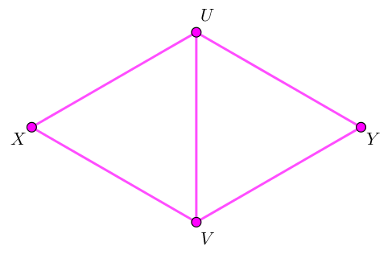
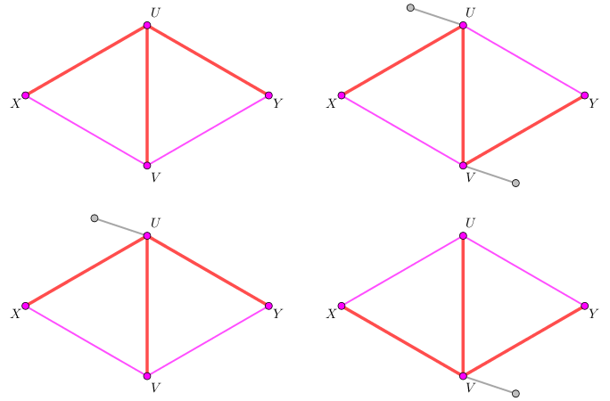
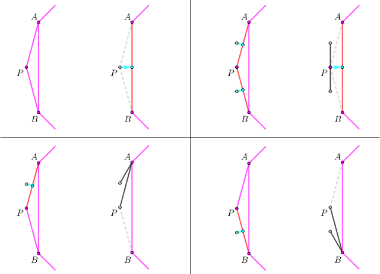

给定一个凸 $n$ 边形的三角剖分，将其看成一张 $n$ 个点 $2 n - 3$ 条边的图 $G$。求是否存在一个 $G$ 的生成树 $T$，满足 $T$ 中没有 $2$ 度顶点？如果存在，并给出一组构造。
第一行包含一个正整数 $n$ ($3 \leq n \leq 5 \times 10^5$)，表示凸多边形的边数，同时也是 $G$ 的点数。
接下来 $n - 3$ 行，每行两个正整数 $i, j$ ($1 \leq i, j \leq n; 1 < \left| i - j \right| < n - 1$)，描述凸多边形内部的一条边。
保证这 $2 n - 3$ 条边恰好构成凸多边形的三角剖分。
如果不存在生成树 $T$，输出一行 $-1$。
否则输出 $n - 1$ 行，每行两个整数，描述 $T$ 中的一条边。
你需要保证这 $n - 1$ 条边恰好构成一棵树。如果有多棵树满足条件，输出任何一组均可。
首先，若 $n = 3$，则答案显然不存在 (所有 $3$ 棵生成树均为 $P_3$，存在 $2$ 度点)。
下面说明，对于 $\forall n \geq 4$ 以及任意的三角剖分，对应的生成树均存在。
我们 "合适地" 加强这个命题，从而使用数学归纳法证明，并在证明的同时给出构造。
首先，定义扩展三角剖分是这样一个三角剖分：对于凸 $n$ 边形的一个三角剖分，凸包上的 $n$ 条边上，有些边有一个标记。对于每条有标记的边 $\left( u, v \right)$，在最终的 $T$ 中，需要选择一个点 ($u$ 或 $v$)，向外挂一个叶子，这样才能得到最终的生成树。
因此，"扩展三角剖分" 图的生成树会含有 $n - 1 + \lambda$ 条边，其中 $0 \leq \lambda \leq n$ 表示凸包上 $n$ 条边中，被标记的边的条数。
下面证明：对于 $n \geq 4$ 边形的一个扩展三角剖分，存在对应的生成树 $T$，满足 $T$ 中无 $2$ 度顶点 (由于正常的三角剖分也属于 "扩展三角剖分"，因此证得此结论后原命题也得证)。
(ps: "生成树" 这一条件隐含了一个信息：图连通且不存在 $0$ 度顶点，证明过程中会用到)
使用数学归纳法的话，那当然得先奠基喽。那就先考虑 $n = 4$ 的情形。
由于四边形的普通三角剖分在同构意义下是唯一的。因此我们设两个 $2$ 度点为 $X, Y$，两个 $3$ 度点为 $U, V$，如下图所示：
我们规定，对于任何一条有标记的边，我们均选择那条边上的 $3$ 度点 ($U$ 或 $V$) 去挂叶子。于是，根据 $U$ 和 $V$ 是否挂过叶子，分为三类情况讨论，如下图：
$U, V$ 均没挂叶子 (左上)。
此时，可以令 $T = \left\{ \left( U, V \right), \left( X, U \right), \left( Y, U \right) \right\}$。
$U, V$ 中有一个挂了叶子 (下二)。
此时，若 $U$ 挂了叶子，则令 $T = \left\{ \left( U, V \right), \left( X, U \right), \left( Y, U \right) \right\}$；$V$ 挂叶子的情况同理。
$U, V$ 均挂了叶子 (右上)。
此时，可以令 $T = \left\{ \left( U, V \right), \left( X, U \right), \left( Y, V \right) \right\}$。
于是归纳奠基步骤完成，下面开始归纳递推。
设任意 $n - 1$ ($n \geq 5$) 边形的扩展三角剖分存在无 $2$ 度点的生成树 $T$，考虑一个 $n$ 边形的扩展三角剖分。
首先，和 [HNOI2019]多边形 类似，我们需要用到多边形三角剖分的一个基本性质：
任意一个多边形的三角剖分图的对偶图 $G_T$ 为一棵树。
我们考虑这棵树的叶节点对应的三角形 $\triangle PAB$，则必有一个顶点在三角剖分中的度数为 $2$。不妨设 $d_G \left( P \right) = 2$。
根据 $P A, P B$ 是否有标记，再分为三类情况讨论，如下图：
$P A, P B$ 均无标记 (左上)。
由于 $d_G \left( P \right) = 2$，因此在最终的 $T$ 中 $d_T \left( P \right)$ 一定为 $1$。
而且，由于 $P$ 只和 $A, B$ 相连，因此 $P$ 所在的三角形一定是 $\triangle PAB$。
从而，我们可以删去 $P A, P B$，并将 $A B$ 打上标记。
由归纳假设，剩下 $n - 1$ 边形的扩展三角剖分存在无 $2$ 度点的生成树。
我们只需要将带标记的边 $A B$ 所挂的叶子设为 $P$ 即可，递推完毕。
$P A, P B$ 恰有一个有标记 (下二)。
由对称性，不妨设 $P A$ 有标记，$P B$ 无标记。
我们考虑在 $T$ 中加入 $P A$，不加 $P B$，然后将 $P A$ 的叶子连向 $A$。此时 $d_T \left( A \right) = 2$。
但是，当我们删去点 $P$ 时，通过归纳假设得到的生成树中 $d_{T'} \left( A \right) > 0$。
于是在最终的树中 $d_T \left( A \right) > 2; d_T \left( P \right) = 1$，满足题意 (注意这种情况我们不需要额外的标记)。
$P A, P B$ 均有标记 (右上)。
我们将 $P A, P B$ 的叶子均连向 $P$，然后删去 $P A, P B$，将 $A B$ 打上标记。
利用归纳假设，将 $A B$ 所挂的叶子设为 $P$，从而 $d_T \left( P \right) = 3$，是可行的。
因此，由归纳原理知，原命题对一切 $n \geq 4$ 均成立。
这个证明虽然不是直接构造性的，但它是递推构造性的。
因此我们可以用一个队列来维护当前 $2$ 度点集合，然后对边的处理进行讨论即可。
可以预先处理出三角剖分图的对偶图 $G_T$，从而在 $O \left( n \right)$ 时间内解决问题。
#include <bits/stdc++.h>
#define EB emplace_back
typedef std::pair <int, int> pr;
typedef std::vector <int> vector;
struct __hash__ {
typedef unsigned long long u64;
static std::hash <u64> H;
inline size_t operator () (const pr &x) const {return H(x.first | (u64)x.second << 32);}
};
typedef std::unordered_map <pr, int, __hash__> map;
const int N = 500054, M = N * 2;
struct edge {
int u, v;
edge (int u0 = 0, int v0 = 0) : u(u0), v(v0) {if (u > v) std::swap(u, v);}
inline int operator () (const int x) {return u ^ v ^ x;}
} e[M];
int n, E = 0;
int deg[N], que[N];
int tag[M], tmp[N];
bool alive[N];
vector G[N];
std::vector <pr> edges;
map dict;
inline void link(int u, int v) {edges.EB(std::minmax(u, v));}
inline int get(int u, int v) {return dict[std::minmax(u, v)];}
inline void addedge(int u, int v) {e[++E] = edge(u, v), G[u].EB(E), G[v].EB(E), ++deg[u], ++deg[v];}
void init_edges() {
dict.reserve(E), dict.rehash(20030731);
for (int i = 1; i <= E; ++i) dict.emplace(pr(e[i].u, e[i].v), i);
}
inline void output() {
std::sort(edges.begin(), edges.end());
for (const pr &e : edges) printf("%d %d\n", e.first, e.second);
}
int main() {
int i, h = 0, t = 0, u, v, w, x, y, xu, xv, yu, yv; bool flagu, flagv;
scanf("%d", &n);
if (n <= 3) return puts("-1"), 0;
addedge(1, n);
for (i = 1; i < n; ++i) addedge(i, i + 1);
for (i = 3; i < n; ++i) scanf("%d%d", &u, &v), addedge(u, v);
init_edges();
for (i = 1; i <= n; ++i) if (deg[i] == 2) que[t++] = i;
memset(alive + 1, true, n);
for (i = 4; i < n; ++i) {
x = que[h++], v = 0;
for (int j : G[x]) if (alive[e[j](x)]) tmp[v++] = j;
assert(v == 2), u = *tmp, v = tmp[1], w = get(e[u](x), e[v](x));
if (tag[u] && tag[v]) link(tag[u], x), link(tag[v], x), tag[w] = x;
else if (tag[u]) link(tag[u], e[u](x)), link(x, e[u](x));
else if (tag[v]) link(tag[v], e[v](x)), link(x, e[v](x));
else tag[w] = x;
alive[x] = false;
if (--deg[u = e[u](x)] == 2) que[t++] = u;
if (--deg[v = e[v](x)] == 2) que[t++] = v;
}
for (v = 0, i = 1; i <= n; ++i) if (alive[i]) tmp[v++] = i;
assert(v == 4);
std::sort(tmp, tmp + 4, [] (const int x, const int y) {return deg[x] < deg[y];});
x = *tmp, y = tmp[1], u = tmp[2], v = tmp[3];
if (tag[xu = get(x, u)]) link(tag[xu], u);
if (tag[xv = get(x, v)]) link(tag[xv], v);
if (tag[yu = get(y, u)]) link(tag[yu], u);
if (tag[yv = get(y, v)]) link(tag[yv], v);
link(u, v), flagu = tag[xu] || tag[yu], flagv = tag[xv] || tag[yv];
switch (flagu | flagv << 1) {
case 0:
case 1: link(x, u), link(y, u); break;
case 2: link(x, v), link(y, v); break;
case 3: link(x, u), link(y, v); break;
}
output();
return 0;
}
坑1：如果 (像上面代码一样) 偷懒不想写 dfs 的话可以使用一个 map 来记录每一对点 $\left( u, v \right)$ 对应的边的编号。不过由于 $n$ 比较大，因此实现时最好用 Hash 表 (unordered_map)。
坑2：删除边的时候可以使用懒删除的方法，直接记录度数 —— 因为每个点作为 "$P$ 点" 至多一次。